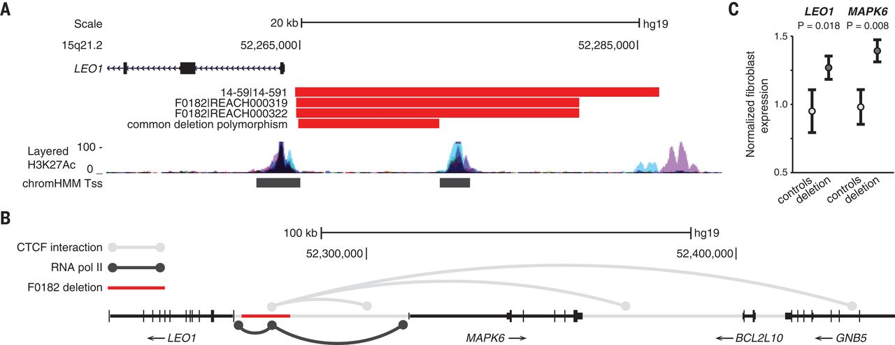

Paternally inherited cis-regulatory structural variants are associated with autism
Fathers but not mothers preferentially transmit deletions of proximal cis-regulatory elements of genes, such as promoters, UTRs, and transcription start sites. This finding was the first report of inherited Autism risk coming from fathers. The prevailing wisdom was that mothers are the sole reservoirs of inherited Autism risk due the the female protective effect (women require more genetic load to be affected, therefore a male shouldn't transmit a risk mutation since he would be affected).
The results suggest that the genetics of Autism is more complex than previously thought and epigenetics, genetic modifiers, and selfish genes might play a role. This work was published in Science